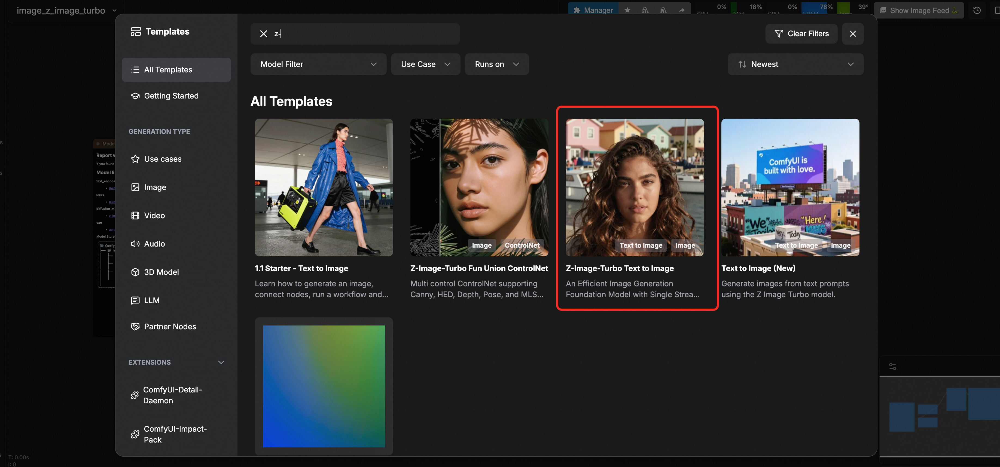

⚡️ Z-Image-Turbo
高效图像生成模型 | 亚秒级推理延迟
✨ 模型简介
Z-Image-Turbo 是 Z-Image 的蒸馏版本，仅需 8 NFEs（函数评估次数）即可达到或超越领先竞品。它在企业级 H800 GPU 上实现 ⚡️亚秒级推理延迟⚡️，可在 16GB VRAM 消费级设备上流畅运行。
📸 照片级真实感
强大的照片级真实图像生成能力
强大的照片级真实图像生成能力
📖 双语文本渲染
准确渲染复杂的中英文文本
准确渲染复杂的中英文文本
💡 提示词增强
具备推理能力的提示词增强器
具备推理能力的提示词增强器
⚡ 快速推理
亚秒级生成速度
亚秒级生成速度
🚀 快速开始
🎨 ComfyUI 工作流

💻 Python API 示例
🔑 获取认证信息
🔐 获取 Token
点击右上方设置按钮，打开底部面板获取API Token
🐍 点击展开完整 Python API 调用代码
import requests import json import uuid import time import random 🔧 配置参数 - Z-Image-Turbo 专用 COMFYUISERVER = "127.0.0.1:8188" 本地服务器 COMFYUITOKEN = "" UNETMODEL = "zimageturbobf16.safetensors" CLIPMODEL = "qwen34b.safetensors" VAEMODEL = "ae.safetensors" 🎯 预设参数 PROMPT = "Latina female with thick wavy hair, harbor boats and pastel houses behind. Breezy seaside light, warm tones, cinematic close-up." STYLEPREFIX = "Pixel art style," 可选的风格前缀 class ComfyUIZImageClient: def _init(self, server=COMFYUISERVER, token=COMFYUITOKEN): self.baseurl = f"http://{server}" self.token = token self.clientid = str(uuid.uuid4()) self.headers = {"Content-Type": "application/json"} if token: self.headers["Authorization"] = f"Bearer {token}" def generateimage(self, prompt, styleprefix="", width=1024, height=1024, steps=4, cfg=1, seed=None): """🎨 Z-Image-Turbo 文生图生成""" print("🎨 开始 Z-Image-Turbo 文生图任务...") if seed is None: seed = random.randint(0, 232 - 1) 基于提供的工作流构建 workflow = { "9": { "inputs": { "filenameprefix": "z-image", "images": ["57:8", 0] }, "classtype": "SaveImage", "meta": {"title": "Save Image"} }, "58": { "inputs": { "value": prompt }, "classtype": "PrimitiveStringMultiline", "meta": {"title": "Prompt"} }, "61": { "inputs": { "stringa": styleprefix, "stringb": ["58", 0], "delimiter": "" }, "classtype": "StringConcatenate", "meta": {"title": "Concatenate"} }, "57:30": { "inputs": { "clipname": CLIPMODEL, "type": "lumina2", "device": "default" }, "classtype": "CLIPLoader", "meta": {"title": "Load CLIP"} }, "57:29": { "inputs": { "vaename": VAEMODEL }, "classtype": "VAELoader", "meta": {"title": "Load VAE"} }, "57:33": { "inputs": { "conditioning": ["57:27", 0] }, "classtype": "ConditioningZeroOut", "meta": {"title": "ConditioningZeroOut"} }, "57:8": { "inputs": { "samples": ["57:3", 0], "vae": ["57:29", 0] }, "classtype": "VAEDecode", "meta": {"title": "VAE Decode"} }, "57:28": { "inputs": { "unetname": UNETMODEL, "weightdtype": "default" }, "classtype": "UNETLoader", "meta": {"title": "Load Diffusion Model"} }, "57:27": { "inputs": { "text": ["58", 0], "clip": ["57:30", 0] }, "classtype": "CLIPTextEncode", "meta": {"title": "CLIP Text Encode (Prompt)"} }, "57:13": { "inputs": { "width": width, "height": height, "batchsize": 1 }, "classtype": "EmptySD3LatentImage", "meta": {"title": "EmptySD3LatentImage"} }, "57:3": { "inputs": { "seed": seed, "steps": steps, "cfg": cfg, "samplername": "resmultistep", "scheduler": "simple", "denoise": 1, "model": ["57:11", 0], "positive": ["57:27", 0], "negative": ["57:33", 0], "latentimage": ["57:13", 0] }, "classtype": "KSampler", "meta": {"title": "KSampler"} }, "57:11": { "inputs": { "shift": 3, "model": ["57:28", 0] }, "classtype": "ModelSamplingAuraFlow", "meta": {"title": "ModelSamplingAuraFlow"} } } print("📤 提交 Z-Image-Turbo 工作流...") response = requests.post( f"{self.baseurl}/prompt", headers=self.headers, json={"prompt": workflow, "clientid": self.clientid} ) print(f"API Response: {response.text}") if response.statuscode != 200: raise Exception(f"API请求失败，状态码: {response.statuscode}") result = response.json() if "error" in result: raise Exception(f"Workflow error: {result['error']}") if "promptid" not in result: raise Exception(f"No promptid in response: {result}") return result["promptid"] def getstatus(self, taskid): """📊 获取任务状态""" try: queuedata = requests.get(f"{self.baseurl}/queue", headers=self.headers).json() if any(item[1] == taskid for item in queuedata.get("queuerunning", [])): return "processing" if any(item[1] == taskid for item in queuedata.get("queuepending", [])): return "pending" historyresponse = requests.get(f"{self.baseurl}/history/{taskid}", headers=self.headers) return "completed" if historyresponse.statuscode == 200 and taskid in historyresponse.json() else "processing" except: return "processing" def downloadimage(self, taskid, outputpath="zimageoutput.png"): """📥 下载生成的图像""" try: response = requests.get(f"{self.baseurl}/history/{taskid}", headers=self.headers) history = response.json() if taskid in history: for output in history[taskid]['outputs'].values(): if 'images' in output: filename = output['images'][0]['filename'] subfolder = output['images'][0].get('subfolder', '') 构建正确的URL if subfolder: url = f"{self.baseurl}/view?filename={filename}&subfolder={subfolder}&type=output" else: url = f"{self.baseurl}/view?filename={filename}&type=output" imageresponse = requests.get(url, headers=self.headers) with open(outputpath, "wb") as f: f.write(imageresponse.content) return outputpath except Exception as e: print(f"Download error: {e}") return None def main(): """🚀 主函数 - 执行 Z-Image-Turbo 文生图任务""" client = ComfyUIZImageClient() try: print(f"🎨 开始 Z-Image-Turbo 文生图任务...") print(f"📝 提示词: {PROMPT}") print(f"🎭 风格前缀: {STYLEPREFIX}") print(f"🔧 使用模型: {UNETMODEL}") 生成图像 taskid = client.generateimage( prompt=PROMPT, styleprefix=STYLEPREFIX, width=1024, height=1024, steps=4, cfg=1 ) print(f"🆔 Task ID: {taskid}") 等待任务完成 while True: status = client.getstatus(taskid) print(f"📊 Current status: {status}") if status == "completed": print("✅ Image generation completed!") break elif status == "failed": print("❌ Generation failed!") exit(1) time.sleep(3) Z-Image-Turbo 速度很快，3秒轮询一次 下载图像 outputfile = client.downloadimage(taskid, "zimageoutput.png") print("🎉 Image downloaded successfully!" if outputfile else "❌ Failed to download image") if outputfile: print(f"📁 Saved as: {outputfile}") except Exception as e: print(f"❌ Error: {e}") if name == "main": main()
💡 使用说明
参数配置： COMFYUISERVER: ComfyUI 服务器地址（默认本地 127.0.0.1:8188） PROMPT: 图像生成提示词 STYLEPREFIX: 可选的风格前缀（如 "Pixel art style,"） width/height: 图像尺寸（默认 1024x1024） steps: 采样步数（Z-Image-Turbo 推荐 4 步） cfg: 引导系数（推荐 1.0） 快速开始：** 确保 ComfyUI 服务已启动 确保已下载所需模型文件 修改 PROMPT 为你想要的提示词 运行脚本：python zimage_api.py
参数配置： COMFYUISERVER: ComfyUI 服务器地址（默认本地 127.0.0.1:8188） PROMPT: 图像生成提示词 STYLEPREFIX: 可选的风格前缀（如 "Pixel art style,"） width/height: 图像尺寸（默认 1024x1024） steps: 采样步数（Z-Image-Turbo 推荐 4 步） cfg: 引导系数（推荐 1.0） 快速开始：** 确保 ComfyUI 服务已启动 确保已下载所需模型文件 修改 PROMPT 为你想要的提示词 运行脚本：python zimage_api.py
📈 性能表现
根据 Elo 评分的人类偏好评估，Z-Image-Turbo 在开源模型中取得了最先进的结果，同时相对于其他领先模型展现出极具竞争力的性能。
!AI Arena 评分
⚡️ Z-Image-Turbo | 高效图像生成的新标准
Apache-2.0 License | 阿里巴巴通义实验室出品
© 2009-2022 Aliyun.com 版权所有